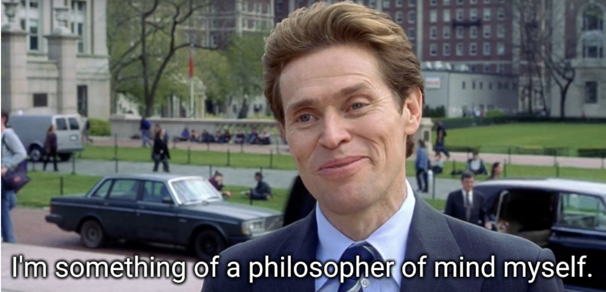
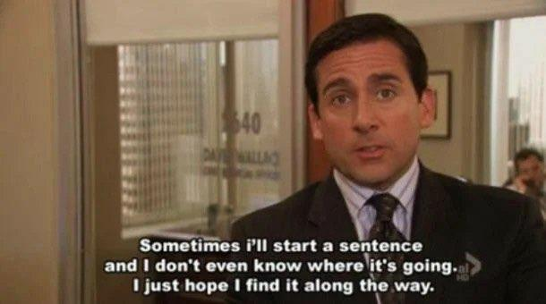

Table of contents
- Introduction
- A Thought-Provoking Start: Sensory Grounding in Large Language Models
- Yann LeCun’s Bold Prediction
- David Chalmers’ Nuanced View
- A Glimpse into Other Talks
- New York Vibes
- Conclusion
Last week, I was fortunate enough to attend the captivating Philosophy of Deep Learning Conference at New York University. This event united experts from diverse fields to explore the philosophical aspects and implications of deep learning and artificial intelligence.
A Thought-Provoking Start: Sensory Grounding in Large Language Models
The conference kicked off with a thought-provoking pre-conference debate titled “Do large language models need sensory grounding for meaning and understanding?”. The debate featured esteemed speakers such as Yann LeCun and David Chalmers.
Throughout the conference, every interaction, from keynote speeches to coffee breaks, seemed to be imbued with philosophical depth.

This meme captured the mood of the conference perfectly. Everyone seemed to be thinking deeply about the implications of their work.
Yann LeCun’s Bold Prediction
Yann LeCun, one of the pioneers in the field of deep learning, was on the “Yes” side of the debate. He made a bold prediction that nobody in their right mind will use autoregressive models 5 years from now. LeCun argued that Auto-Regressive Large Language Models (LLMs) are exponentially diverging diffusion processes, and while the probability of errors can be reduced through training, the problem cannot be entirely eliminated.
In other words LLMs are like Micael Scott’s famous line in The Office:

His solution is to make LLMs non-autoregressive while preserving their fluency. You can find his slides here.
David Chalmers’ Nuanced View
David Chalmers, a renowned philosopher, took a more nuanced approach to the debate. He started his talk on the “Yes” side with a bit of philosophical history about the grounding problem, discussing thought experiments from philosophers like Avicenna. Chalmers ultimately concluded with a “No, but – it’s complicated” answer to the debate question. You can find his slides here.
A Glimpse into Other Talks
One of the most interesting talks during the conference was by Tal Linzen, titled “What, if Anything, Can Large Language Models Teach Us About Human Language Acquisition?”. Linzen posited that deep learning can be a great tool for testing theoretical claims about children’s linguistic input and inductive biases if used correctly. However, he emphasized that cognitive scientists need to train new models themselves, as the “large language models” from big labs are not relevant to questions about humans. Linzen’s slides can be found here.
Update 8 April 2023: Head to https://phildeeplearning.github.io to find individual links in the program, or for the whole Youtube playlist.
New York Vibes
The conference experience was made even better by the electric atmosphere of New York City. Walking through the city’s bustling streets, I couldn’t help but feel the energy and excitement that makes New York such a unique place. Between conference sessions, I enjoyed exploring the city’s diverse neighborhoods, trying out new foods, and admiring the stunning skyline. There’s something truly special about being in a city that feels so alive and vibrant, and it was the perfect backdrop for a conference focused on the future of deep learning and AI.
Conclusion
In conclusion, the Philosophy of Deep Learning conference at NYU was an unforgettable experience that brought together experts from various fields to discuss the latest developments in deep learning and artificial intelligence. The insightful debates and thought-provoking talks challenged our understanding of large language models, their relationship to human cognition, and the philosophical implications of AI. Combined with the thrilling energy of New York City, the conference left me feeling inspired and eager to explore new ideas in the rapidly evolving world of AI and deep learning. I’m already looking forward to attending similar events in the future and further immersing myself in the fascinating intersection of technology and philosophy.